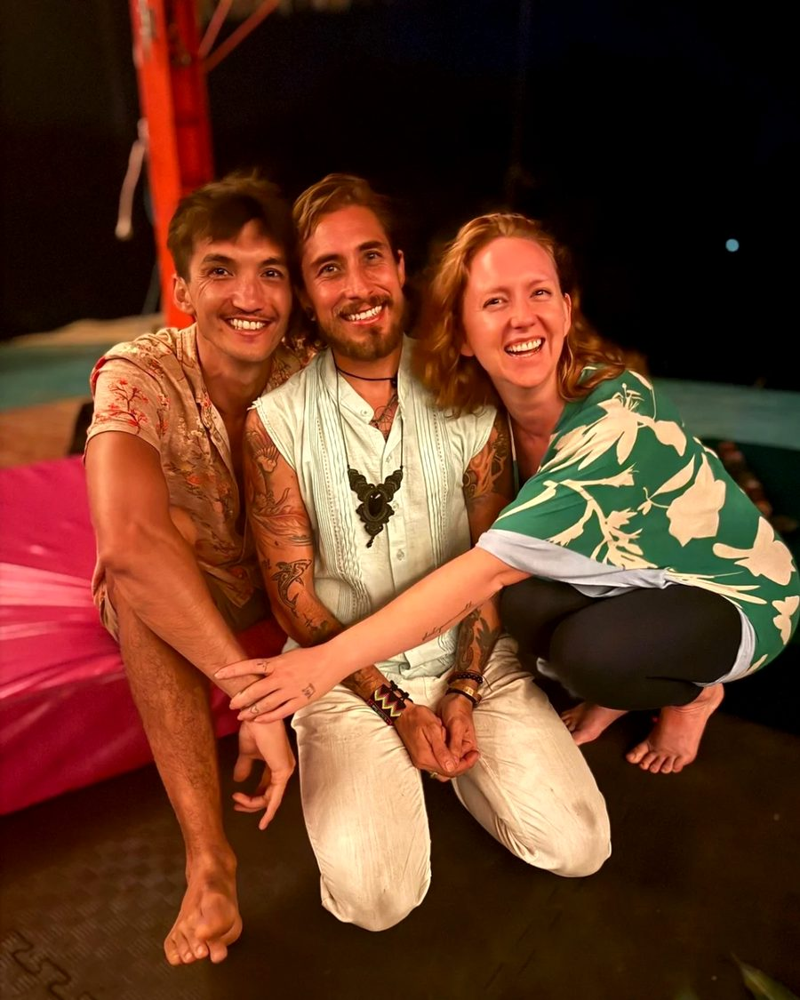
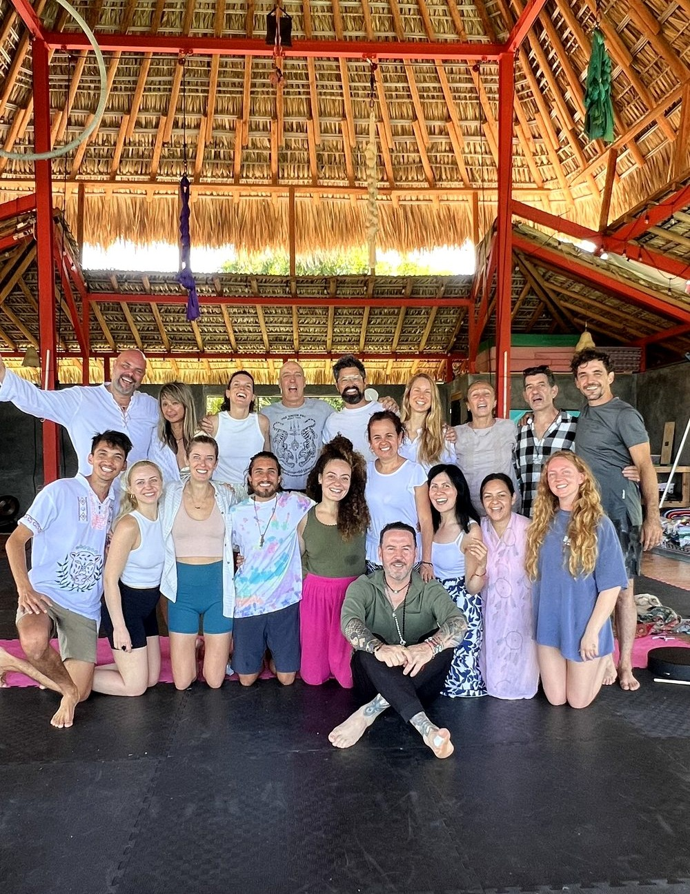
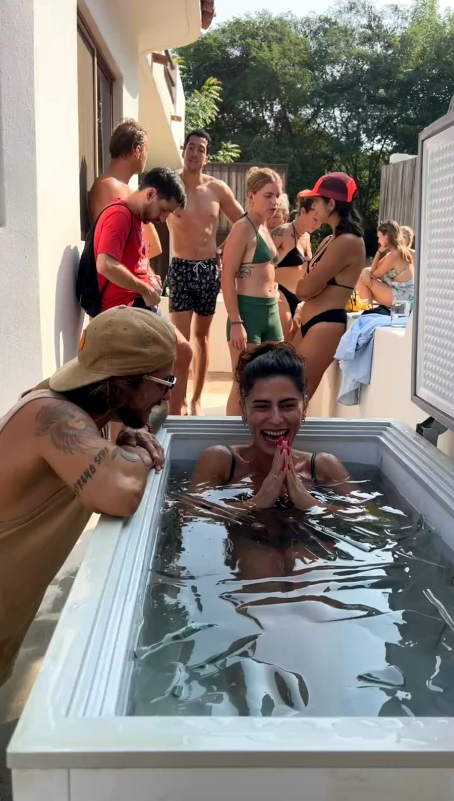

Puerto Escondido, Mexico
Puerto Escondido, Mexico

Humberto holding ceremony. Trevor, Aleck, and Allie holding every space between: the somatic work, the integration, the four days that frame the three. A small group brought together with intention. The container that continues when you return home.
"Not only the most meaningful event of 2025 but the most meaningful in my life by far."— Harvie, October 2025
No forms. No checkout links. A conversation.
The right people find this through alignment.
Reach out and we'll talk. If it's a fit, I'll send you the full details.
There's a full information page about November 2026. If you want it, ask for it.
Or message on Instagram →Not more success. Not more doing. More truth. More connection. More aliveness.
Maybe from the outside your life looks beautiful. Maybe you have already done years of healing, growing, searching, becoming. And still, something deeper is calling you. A slower life. A more honest relationship with yourself. A deeper connection to Love, Spirit, Purpose, Nature, Community.
This retreat is for the ones longing to return to what is real.
You do not need more information. You need experience.
Some arrive seeking clarity. Some arrive seeking healing. Some arrive knowing they can no longer continue living disconnected from themselves.
Choosing to sit with sacred plant medicine is not something we take lightly. It asks for honesty, reverence, and a willingness to meet yourself fully.
If you feel called to walk with medicine, trust that you will know when the time is right for you.
Sacred plant medicine does not give you answers. It clears space for truth to emerge from within.

We create spaces where people reconnect to their truth, dissolve unconscious patterns, and remember what it feels like to fully be alive.
Through sacred medicine, intentional community, and deeply supported integration, this work invites a more honest relationship with yourself, your life, and the path you are here to walk.
These retreats are intentionally intimate because this work deserves presence, care, and genuine connection.
Ceremony is guided by a shaman trained in the Shipibo tradition of Peru, with nearly a decade of experience and over 500 ceremonies facilitated.
This is not about chasing peak experiences. It is about learning how to live more truthfully once you return home.
The retreat may end. The relationship with yourself does not.
Eight participants. All first-time plant medicine experiences. Six months later, they still talk every day. They call each other familia. These are their exact words.
"Seven months later and I still think about it most days. How do you have an experience that stays with you like that? This journey is not easy. But when you are ready, it is life changing. Integration since our time has been everything. I am so grateful for what came out of that week."— Steve
"It was a full body yes."
"Since the first moment, I felt so safe."
"One of the most meaningful events not only of this year, but of my life. Gracias, familia."— Olga
"Definitely my highlight of the year. So much magic."— Anna
"Our experience was a once-in-a-lifetime kind. I feel so blessed to have walked this path with you."— Thierry


The work begins before you arrive. Every participant has a personal conversation with the team before being accepted. Intention setting, preparation guidance, and connection with the team. The ceremony is more powerful when everyone in the room is meant to be there.
Seven days in Puerto Escondido. Sacred ancestral medicine with Humberto. Ayahuasca, Bufo, Kambo, and Satori. Each medicine chosen with intention. A small, curated group of people who were meant to be in the room together.
Aleck, Allie, and Trevor hold every space between ceremony: sound healing, somatic practices, and the container that allows what the medicine reveals to land. Integration is where transformation stabilizes. A group that stays connected. The work does not end when you return home. That is when it begins.
Each medicine and ceremony is optional. This is a genuine introduction to sacred medicine held within a proven methodology, conducted safely and with care, and designed to meet each participant where they are.
"Most containers end when you leave. This one is designed for what happens when you return home."
Three people. Each one essential to what happens before, during, and after.

Sound therapist, musician, breathwork facilitator, and keeper of ancestral instruments. He weaves sound frequencies and breath into transformative experiences that open the door to self-discovery and inner balance. In the container, he is the grounding presence — holding the field before, during, and long after ceremony. He helps others reconnect through breath, music, and presence.

Over 10 years exploring holistic wellness, energy work, Reiki, and intuitive healing. She bridges traditional medicine with the subtle art of spiritual connection. Allie holds space for deep remembrance, helping others reconnect to their inner wisdom. When she is in the container, the field deepens, and the feminine is present.

Trained in the Peruvian jungle near Pucallpa under a traditional Shipibo shaman. Nearly a decade of experience. Over 500 ceremonies across Mexico, the United States, Europe, and South America. He left a conventional path to dedicate his full life to this work. He lives what he teaches.
There has never been a bad ceremony with Humberto.
I did not build Sacred Journeys from strategy. I built it from a dream I could not shake and a calling I could not explain. That dream led me to Guadalajara, where I met Humberto. The team came together and six months later, we hosted our first retreat.
I am not the facilitator. I am the vision-holder, the container-builder, and a participant in ceremony alongside everyone else. I walk the path. That distinction matters.
My personal shift from force to flow is the transmission this brand is built on. I have chased the metrics, built the things, felt the momentum and still found myself standing in a gap I could not name. I built from the other side of it.
Every week in Puerto Escondido, people gather at the house. Music and Mantras at sunset. Wellness Saturdays with Aleck. Breathwork. Sound journeys. Community dinners. Real connection in a transient town that keeps people coming back.
222 people in a WhatsApp group that has been running for over a year. The retreat is one part of something that lives year-round.
"I wish I found this sooner. This feels like family." — Lilia





If any of this landed, send Trevor a message. That is the only next step.
Message Trevor on WhatsApp → Or message on Instagram →